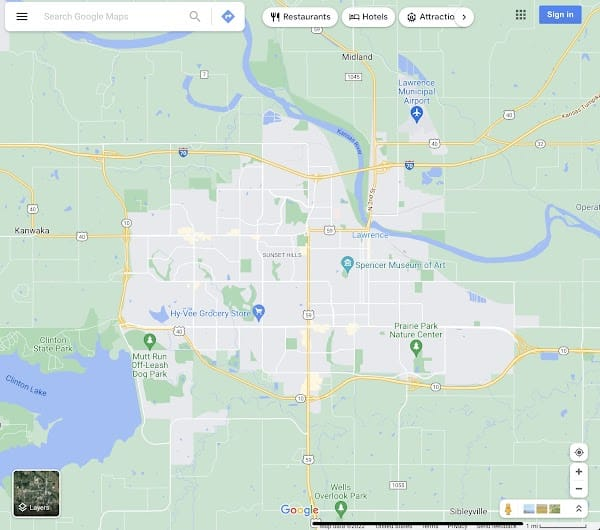
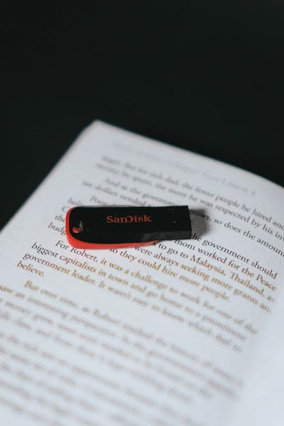

You win some, you lose some. This probably should have been several Columns. I hope me slapping some pretty pictures in here and the word “Feature” on the front of the title made a difference.
Solved Problems
This is a celebration of humanity’s accomplishments. So often we talk about how we have just screwed everything up. We have caused global warming and the total extinction of species at a rate not too dissimilar to that achieved by a certain meteor a couple hundred million years ago… but also we have solved some real problems in ways that (probably) aren’t really causing horrible side effects.
Here are some uplifting examples of stuff for which you really probably should be grateful.
Salt
Salt used to be the stuff literal wars were fought over. Now I can buy enough salt to last a salt-loving family an entire year about the same price you’d expect to pay for a chicken. Salt makes food taste better, it’s just that simple.
Google Maps

Google Maps is one of the best, coolest things humanity has made in my lifetime. It’s the world, in rich detail. Up-to-date information about everything around you. Solving elegantly so many separate problems that used to exist. The old solutions were both less easy and less effective.
I still remember one of the very first iPhone commercials I ever saw was simply a demo of using your iPhone to look up food places, pick one based on its review, call the place to reserve a table, then navigate there. Immediately I thought: that is incredible. Now the ability to do that set of steps taken for granted. That didn’t used to be easy. That used to be several very cumbersome, disconnected steps.
Digitization & Storage Density

We have invented a technology that enables you to record an entire lecture series to encapsulate that wisdom for future onto something the size of your fingernail. We used to have bookshelves dedicated to family photo albums. Now you can fit orders of magnitude more photos than that on a thumb drive. All of the text articles on Wikipedia can be compressed to 20.69 GB1, which means you can fit it on a $5 flash drive. It’s simply amazing.
Speaking of Wikipedia…
Wikipedia
Wikipedia gives me such hope for humanity. A massive collaboration of volunteers compiling and continually updating the near inexhaustible font of knowledge… it’s incredible. You can get a pretty decent overview of essentially any topic, instantly, and for free. It’s the sort of thing that was only in science fiction2 until about 10 years ago.
Smallpox
Hey, we got one!
Unsolved Problems
Originally this was just a Column about solved problems. It ended here. It would have been much shorter and more nice to read if it had. So, fair warning. There’s nothing forcing you to read this3.
Unsexy Solutions
We have the right answers to most of what ails us. The problem is that those answers typically aren’t as easy as they are simple. After having read & taken notes on 68 non-fiction books4, here is what pretty all of them say:
- Consistantly get enough sleep.
- Eat food. Not too much. Mostly plants.
- Raise your heart rate for about 30 minutes most days. Lift weights 2+ times each week.
- Spend time outside. Limit time looking at screens.
- Spend time with others who make you happy.
- Spend less money than you earn. Keep a budget. Save what you can.
- Have a calendar and a to-do list. Do weekly reviews.
If you did all of those very simple things, you’d avoid so many of life’s biggest preventable problems… but we haven’t figured out how to those simple things easy. The closest we’ve come (my opinion) is captured in the book ‘Atomic Habits’.
Transportation
Speaking of unsexy, another unsexy problem is simply getting things from one place to another. This remains one of the single hardest issues we face. There are so many factors that go into this, I sort of want to dedicate an entire post to it (in fact I sort of already did that.
Damn you should read that old post I wrote. That was a great one.
Human Layout
A huge part of the transportation problem is simply how we as a species chosen to fill all available space, often in very low-density ways. We live in places that are completely inhospitable to human life, then use energy to make it work. I’m not even talking about ‘just’ places like Las Vegas, but arguably my own home state of Kansas isn’t really all that great when it comes to living a comfortable life 8+ months out of the year. We’re dependent on heating and cooling, which is dependent on energy.
Moreover we live far apart, from everything. _“Let’s just walk there” _or “let’s just ride a bike there” has only been possible in my life when I lived on campus in college. Technically right now I’m within a bike ride of most things I need in life, but our city isn’t built around bikes. Every time I bike I put my life into the hands of everyone who drives by me. Also in their hands: their phone. So instead we drive 3000 pound vehicles to take our 150 pound bodies to buy 25 pounds of food, then drive back. Expending >90% of that energy just to move the car to and from the grocery store, as opposed to its contents.
The “American dream” of owning a house and one car per adult is wildly inefficient from a resource use perspective. The cost of having your own house, cars, and land means that most people need large pieces of capital equipment that mostly just ‘sit around’ for the vast majority of their lives. A lawn mower that’s properly maintained could service a lawn area equivalent to hundreds of homes if it were run full time. Instead we all collectively buy 100 lawn mowers, use them each an hour a week or less, and pay to maintain them separately. Each of us owning land means we live far apart from everything, which makes not owning a car infeasible. I’ve read from a few different sources now that estimates put the total space allocated towards streets and parking in an average American city at around 50% of all available space. That sucks.
And I’m 100% guilty of all of the above.
I have a home and a lawn mower I have to maintain. Not to mention the weed eater, two air conditioners, more furniture than I could possibly hope to use all at once, and dozens-to-hundreds of other examples of nice things I’ve surrounded myself with that I don’t “need” to survive… at least not in the hunter-gatherer sense of the word.5
I have to drive 45 minutes to my job. Then another 45 minutes back home. Before we got the Tesla this ~95 mile round trip amounted to 4 gallons of gas, or 78 pounds of CO2 emitted, and a personal cost to me of about 3.25 (still 90 minutes of my life, though).
The work from home revolution that came with COVID-19 showed a large swath of the population that working from home was not only possible, but 100% better than commuting. Telepresence cannot replace physical presence entirely, but I reckon it can do ~80% of the work. Days on which I can work from home I spend functionally zero dollars to get there and back, and my commute is zero minutes.
Bad Economic Incentives
One of the fundamental truths of economics is that ‘actors respond to incentives’. People opt for the least expenditure of resources for whatever result they desire.
You want a banana, you choose the 1.00 banana.
You want to make money running a lemonade stand, but the kid down the street also has a lemonade stand. You have choices:
| Action | Cost | Risk of Failure |
|---|---|---|
| Undercut their price | Lowered margin, fiscal opportunity cost | Low |
| Spend more effort advertising | Advertising expense & energy costs | Medium |
| Spend effort trying to make your product better | Energy cost and likely expense | High |
| Burn down your competitors lemonade stand | Essentially none | Very Low |
But one of those things is not like the other. We live in a society that recognizes that 2 lemonade stands competing will drive a better product at a better price for consumers. Burning down a lemonade stand doesn’t provide that, and creates real problems for the victim. Those problems lead to potential for violence and blah blah blah you get the picture.
Thus: laws.
Laws are meant to step in counteract the incentives for bad behaviors. You’d hope in the lemonade stand example basic morality would prevent you from burning down the lemonade stand of the kid down the road, but if that’s not good enough you now have to weigh the strong likeliness that you’d face some sort of civil or criminal lawsuit. Thus your incentives for societal-value-reducing-behavior are (hopefully) nullified… but not everyone agrees on what we should incentivize and how. In my view, this is >50% of what arguments in politics really boil down to.
As a rule, I try not to go into politics here on the general internet. I won’t break that rule here. Suffice to say, there are some bad economic incentives happening at all levels.
This isn’t even going into things like the fact that it costs more money and time to eat a good, healthy, home-cooked meal from raw sources than it does to buy a couple of McDoubles.
Global Warming
This Column got way too long. This is somehow the last sentence I’m actually writing before posting it - so this link is all I’ll leave you with.
Cancer
Nothing new to say here. It just deserves to be in every list like this.
Top 5: Random Other Thoughts
3 of the 5 of these are fairly negative. Sorry about that.
5. Absence Is Required
“Absence makes the heart grow fonder” could just as well be phrased as “lack of absence makes you insane”. In a world without scarcity, nothing matters. I don’t envy the mega rich.
We took a cruise last month. By the end of it I was actually annoyed at having to finish fancy fun drinks and eat incredible food that I didn’t prepare and didn’t have to clean up after. “Nothing ventured nothing gained” doesn’t really apply here, but without some form of effort expended to achieve a thing… the thing becomes functionally meaningless pretty quickly.
4. Absence is Required Part 2
I took care of my boys by myself for a week. I love my kids. They are the light of my life. By the end of day 4 I was struggling to handle the minorest of behavioral issues… stuff no kid should ever get in trouble for was setting me off. My 3 Year Old was being granted zero leeway to be three years old - and that made me really disdainful of his caregiver (myself).
That began a cycle of the snake eating its own tail. I was upset that I was getting so easily upset, which caused me to be upset. How do you apologize to a 3 year old for being short with him just for wanting your attention? The answer is you can’t really. Understanding where I’m coming from requires 25+ years on this earth, and even then most people would struggle not to take it personally.
So I just half to chalk that one up as an “L” and try to overpower it with hugs and tickles and games of hide and seek going forward. You need to maintain a ratio of at least 5:1 positive to negative experiences with the people you love.
3. My Biggest Pet Peeve
Automated phone trees are terrible, but the absolute WORST thing is when a phone tree has the audacity to pretend like it’s not a phone tree. If you ask me to describe my problem in detail, then play fake typing noises after I stop talking while you process my input to pass off like someone was actually listening to me and diligently transcribing my words… it makes me want to spike my phone on the ground.
Phone trees are bad. Phone trees that lie about what they are are the worst.
2. Cars 2 - Pixar’s Worst
This is not new territory, but I just had to watch this movie for the 10+th time.
Cars 2 is terrible. It was a bad idea that was clearly forced into production for commercial reasons, not artistic ones. They had no idea what story to tell and the choices they made sucked.
It centers around the comedic relief from a previous movie, a primary ingredient in the recipe for a bad sequel. Another ‘bad story’ primary ingredient - it hinges on an unbelievable “post-it note could solve it”-type misunderstanding for 4/5th of the movie (where the secret agents think Mater is also a secret agent).
Tonally and in theme it’s a massive departure from the movie before it, which is one of Pixar’s best.
One of the “morals” of the story is that Lightning shouldn’t have expected Mater to not be a loud annoying interrupting menace to everyone, which just isn’t true. Mater was in the wrong on that one and completely deserved to get dumped on. And the “hero” of the movie Mater wins the day with incredibly reckless behavior based on a hunch. If he had been wrong, his gambit would have killed a bunch of people (including The Queen in the Cars universe).
Cars 2: 1 1/2 stars
1. 3rd Eye Blind Were Mindfulness Enthusiasts
The 3rd eye is a symbol of extra-sensory perception that has been used by various cultures going way, way back. The 3rd eye allows you to perceive that which is not in front of you.
One way to think of mindfulness is that it’s about being grounded in the present. Being mindful requires noticing the things that are around you. Not living in the past, the future, or elsewhere in the present.
So if your 3rd eye is blind, I guess you’re about as mindful as they come. You’re not seeing anything that isn’t right in front of you.
After reading that - if you did not want to see me again, I would understand.
I would understand.
Quote:
The Tesla is made of wood so its camera can toot. My 3 Year Old, figuring out how the world works. He’s nearly got it.
Footnotes
-
According to [Wikipedia](https://en.wikipedia.org/wiki/Wikipedia:Size_of_Wikipedia, naturally ↩
-
As with essentially all topics, there’s a Relevant XKCD. ↩
-
Although it will be on the quiz. ↩
-
I’m approaching 1000 notes in my public Note database. Huzzah! ↩
-
This is partly why I daydream about tiny home, off grid living. With gardens and the whole shebang. ↩